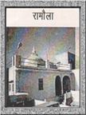
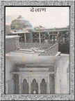
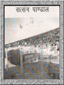

| रामौला |
|

सन्तों के इस पावन धाम में रामद्वारा का ऊपरी भाग रामौला कहलाता है। इस क्षेत्र में परमहंस सन्तों की समाधियां स्थापित है। समाधियों के साथ सन्त निवास के कमरे भी बने हुए हैं। तपणी दर्शन - तपणी दर्शन सन्तों की तपोस्थली श्रीबड़ारामद्वारा सूरसागर में रामद्वारा की परिक्रमा में रामद्वारा के पीछे तपणी स्थल है। सन्तों के इस पावन धाम में परमहंस सन्तों के अंतिम संस्कार इसी पावन स्थल पर होते हैं। भक्तजन इस पावन स्थल पर झडूला उतारते हैं, परिक्रमा देते हैं। पानी में पत्थर की तैरने वाली कुण्डी - सन्तों के पावन धाम में एक विशाल पत्थर की कुण्डी जो भोजन पात्र रखने हेतु रामद्वारा के कोठार में रखी हुर्इ थी। परमहंस श्री अभयरामजी महाराज ने एक बार जब वर्षा के समय टांके की हौदी पानी से भरी हुर्इ थी, सन्तों को बुलाकर कहा कि पत्थर की कुण्डी पानी में तैराते हैं। चलो देखो। तीन चार सन्तों ने मिलकर इस पत्थर की कुण्डी को टांके की होदी मे छोड़ा तो तैरने लगी। वही कुण्डी रामद्वारा में रखी है। आज भी भक्तजनों को इस कुण्डी को पानी में तैराकर दर्शन कराये जाते है। |
| डेलाण |
|

जलाशय के सामने ही डेलाण है। इसमें परमहंस सन्तों की समाधियां बनी हुर्इ हैं। तथा वरसीयों में एवं बड़े आयोजन के समय सन्तों की प्रसाद पंक्ति लगती है। |
| सत्संग पाण्डाल |
|

सन्तों के पावन धाम में रामद्वारा के पश्चिम भाग में सत्संग मैदान में विशाल सत्संग पाण्डाल का निर्माण वर्तमान अधिकरी सन्त श्री रामप्रसाजी महाराज की सत्प्रेरणा द्वारा जोशी परिवार के श्रीमती प्रेमलता जोशी एवं श्री ओमप्रकाशजी जोशी की सदभावना से एवं... |